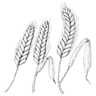
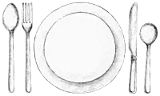
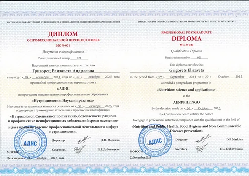
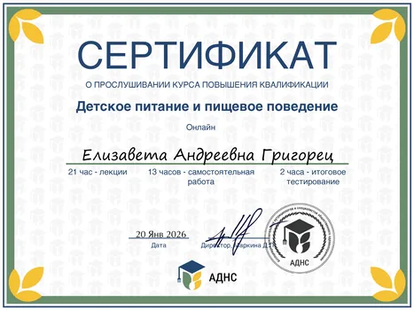
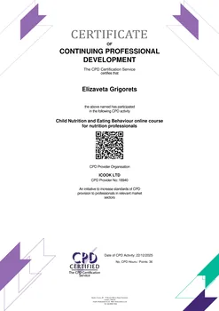
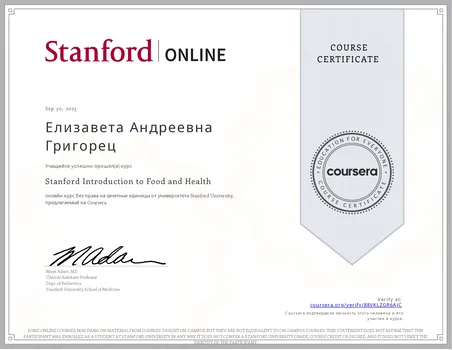
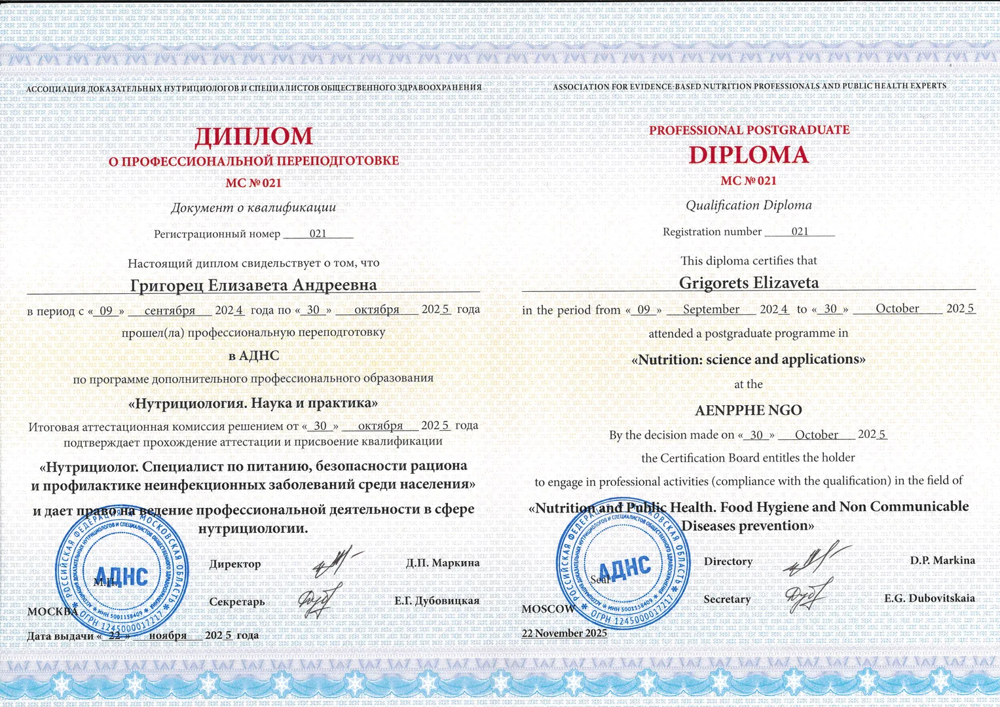
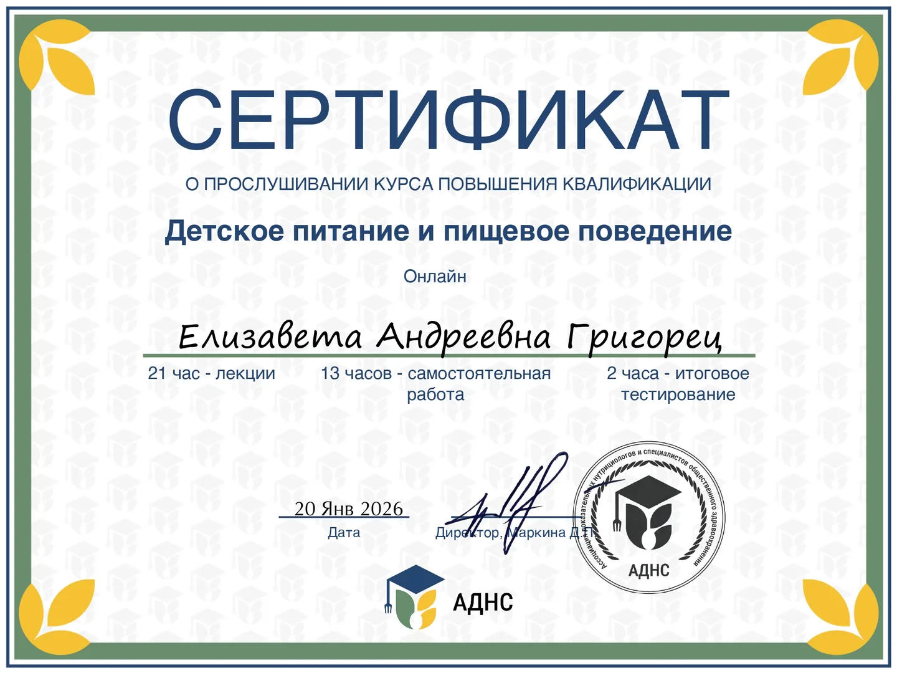
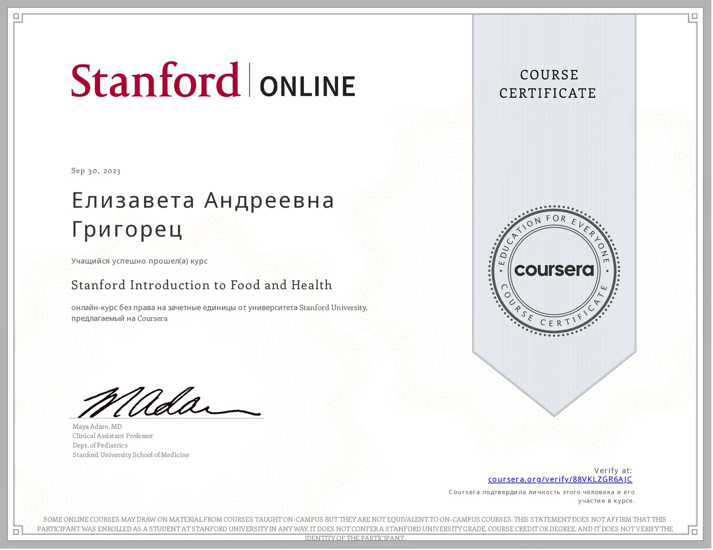

Целиакия

- Безглютеновая диета без дефицитов и «жизни на запретах»
- Безопасность в быту и при посещении мест общепита
- Принципы организации поездок внутри страны и за рубеж
Нутрициолог, специалист по питанию, член АДНС
Помогаю выстраивать сбалансированный рацион, который стабилизирует вес, поддерживает здоровье, повышает качество жизни и сохраняет удовольствие от еды
Оказываю профессиональную поддержку людям с диагнозом целиакия
Записаться на консультацию

до 30 минут
2 500 руб.
до 60 минут
4 500 руб.
до 60 минут + 7 дней поддержки в Telegram
6 000 руб.
Услуги разовой консультации
+
чат в Telegram для вопросов и поддержки в течение недели после
консультации
от 1 месяца и более
18 000 руб. / месяц
Онлайн-встречи 1 раз в неделю
+
чат в Telegram для вопросов и поддержки в течение всего срока
сопровождения
Меня зовут Елизавета Григорец.
Я нутрициолог, член Ассоциации доказательных нутрициологов и специалистов общественного здравоохранения .
За моей спиной окончание программы «Нутрициология: наука и практика» и профильных курсов Stanford University. В своей работе я опираюсь на научные данные и актуальные рекомендации авторитетных российских и международных организаций.
Я сама живу с целиакией и хорошо понимаю, как выстраивать питание с учётом ограничений, не превращая жизнь в бесконечный список «нельзя». Это помогает мне бережно сопровождать людей с ограничительными состояниями, и тех, кто просто хочет «договориться» с едой и своим телом.
Я регулярно обновляю знания и прохожу дополнительное обучение, чтобы мои рекомендации оставались актуальными и опирались на современную научную базу.






